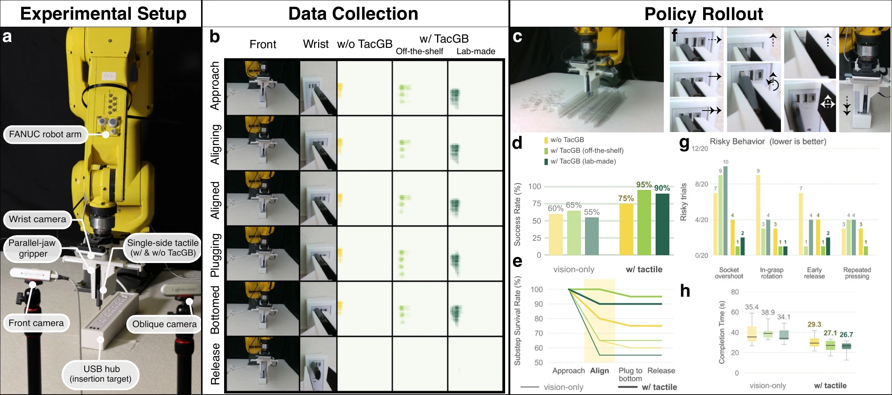

Representative rollouts · playback speeds are annotated in the video.
Recognize alignment.
Know when to stop.
Faceplate contact, socket entry, and full seating can look nearly identical. TacGB makes their load transitions more visible in the tactile input.
95%insertion success
Off-the-shelf TacGB. The molded version achieves 18/20 (90%). Mean completion time for successful trials: 29.3 s without TacGB, 27.1 s off-the-shelf, and 26.7 s molded.
View the full USB results +
